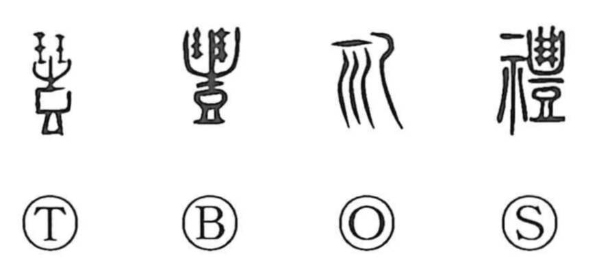

Explanation
Originally written 禮, 礼 is a phono-semantic character: the ritual element marks the sphere of ceremony, while 豊 serves as the phonetic, yielding the on reading rei. The same phonetic appears in 醴, glossed in the Shuowen as a sweet rice wine matured overnight, a drink often used in formal rites (醴酒). The graph thus evokes conducting a ceremony with sweet ritual wine and, by extension, comes to mean proper ritual, etiquette, and respectful bearing. The Zhong Yong famously speaks of “three hundred rules of ceremony and three thousand of dignified deportment,” reflecting the deep cultural emphasis on 礼; from that concern arose the elaborate formalism later known as 繁文縟礼. The simplified form 礼 used today for 禮 is already recorded in the Shuowen as an ancient variant and is attested on Han stone inscriptions.